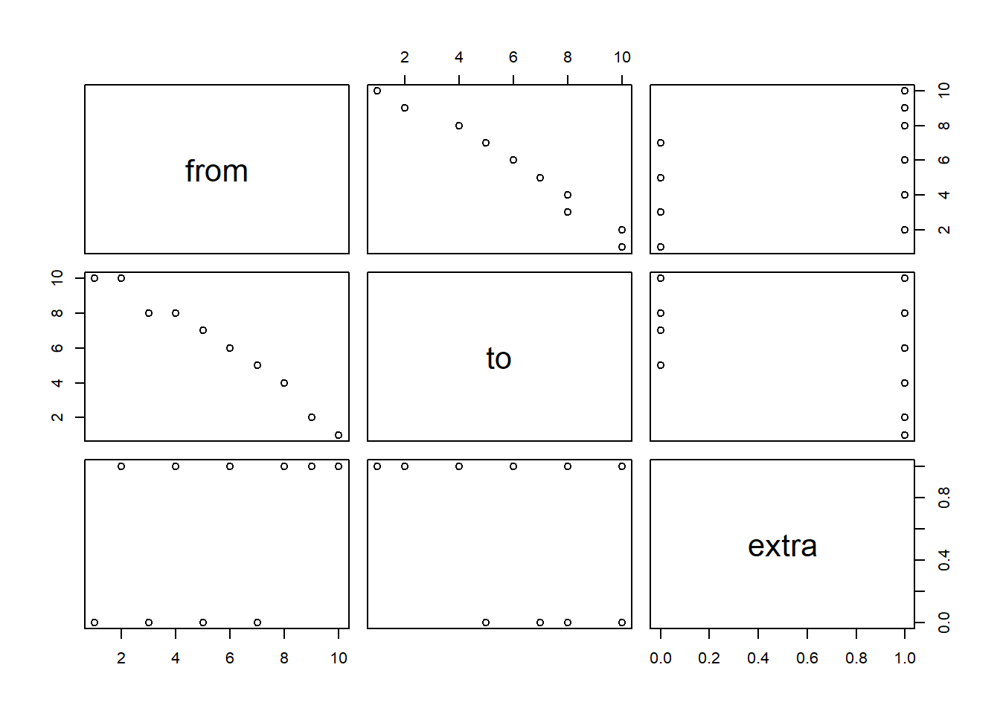
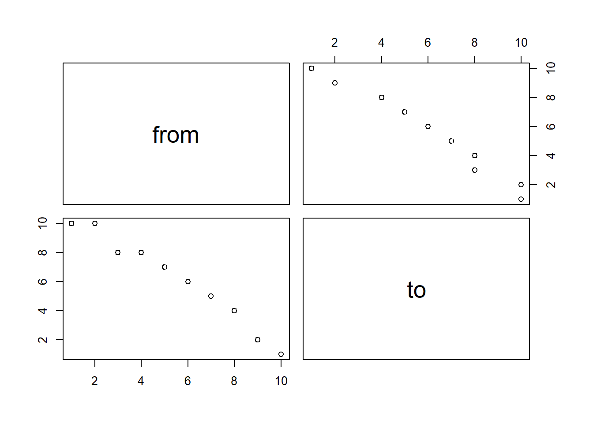
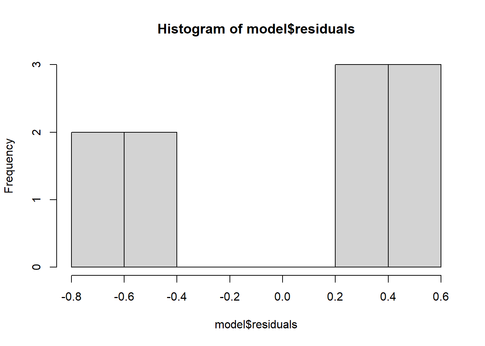
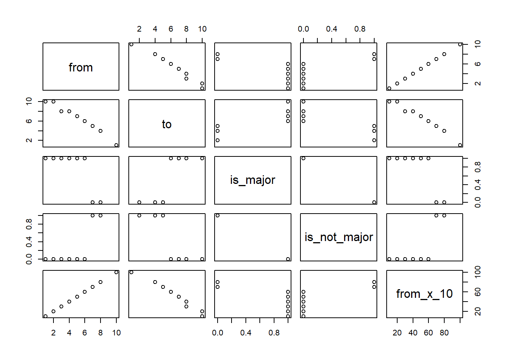
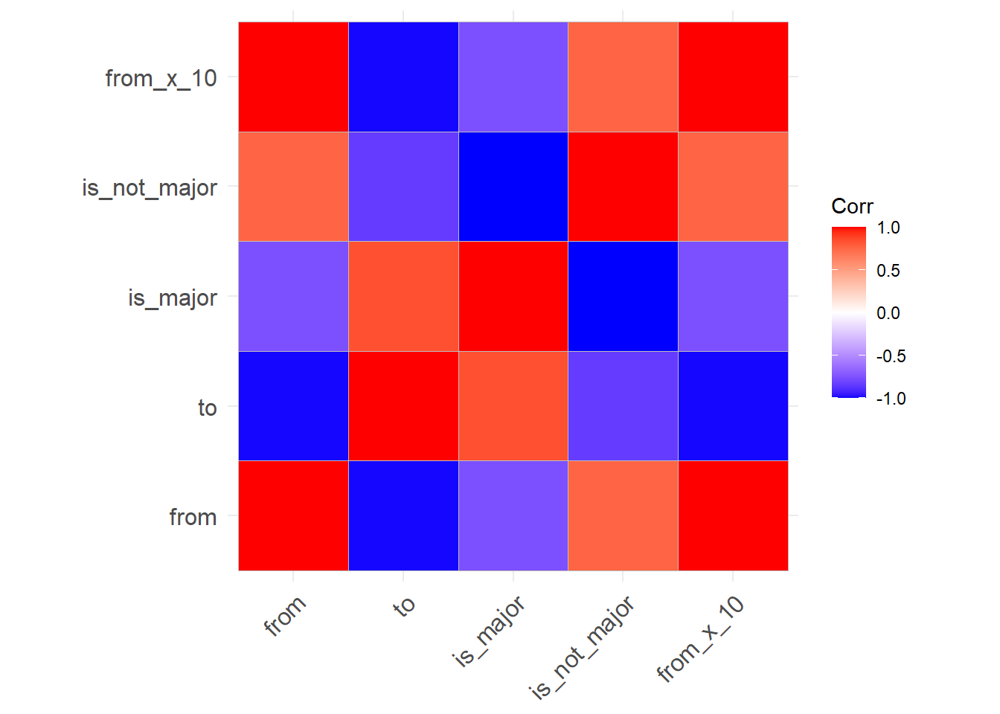
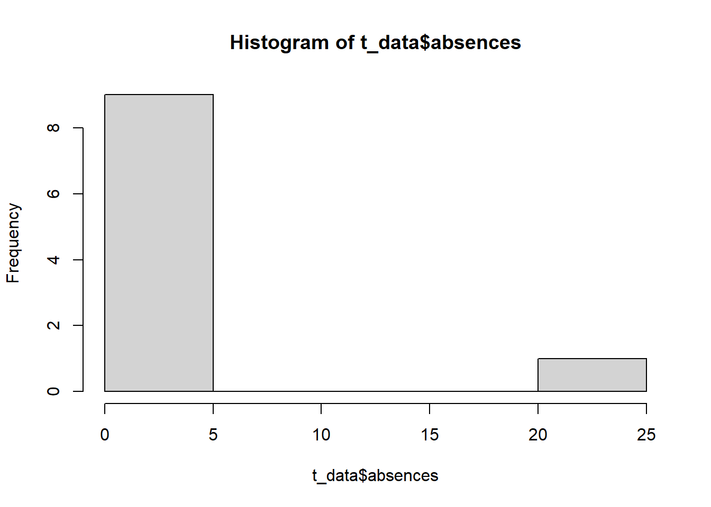

This tutorial aligns with DataCamp’s Introduction to Regression in R tutorial.
Linear Regression is an incredibly important tool. It uses multiple numerical independent variables to predict a single output/dependent variable.
The output variable is generally a continuous numerical variable.
Outcomes:
Terms:
Help:
library(tidyverse)
t_data <- tibble(
from = c(1, 2, 3, 4, 5, 6, 7, 8, 9, 10),
to = c(10, 10, 8, 8, 7, 6, 5, 4, 2, 1),
extra = c(0, 1, 0, 1, 0, 1, 0, 1, 1, 1)
)
# Quick viz of data showing the relationship.
pairs( t_data )
# Create a linear regression model predicting `to` with `from` and using the entire dataset.
model = lm(to ~ from, data = t_data)
# Show a summary of the linear model. Pay attention to these key items:
# Residuals = errors in each row between actual & predicted
# Std Error = the squared difference between
# the predicted and actual values.
# Coefficients:
# Estimate: value of the change in input to output
# Std. Error: averages squared diff between prediction / actual
# p Value: probability of the estimate being a result of random chance
# Residual standard error: the overall avg difference between actual
# and predicted for the entire model.
# Adj R^2, the % of variation explained by the model
summary(model)##
## Call:
## lm(formula = to ~ from, data = t_data)
##
## Residuals:
## Min 1Q Median 3Q Max
## -0.6545 -0.5545 0.3697 0.4030 0.4303
##
## Coefficients:
## Estimate Std. Error t value Pr(>|t|)
## (Intercept) 11.66667 0.37322 31.26 1.19e-09 ***
## from -1.01212 0.06015 -16.83 1.58e-07 ***
## ---
## Signif. codes: 0 '***' 0.001 '**' 0.01 '*' 0.05 '.' 0.1 ' ' 1
##
## Residual standard error: 0.5463 on 8 degrees of freedom
## Multiple R-squared: 0.9725, Adjusted R-squared: 0.9691
## F-statistic: 283.1 on 1 and 8 DF, p-value: 1.576e-07library(tidyverse)
t_data <- tibble(
from = c(1, 2, 3, 4, 5, 6, 7, 8, 9, 10),
to = c(10, 10, 8, 8, 7, 6, 5, 4, 2, 1)
)
# Quick viz of data showing the relationship. Look for any obvious correlation values.
# We cant to avoid any perfectly correlated data, as that will cause problems in our regression.
pairs( t_data )
# Show above, but in numbers.
cor( t_data, use = 'pairwise.complete.obs' )## from to
## from 1.0000000 -0.9861651
## to -0.9861651 1.0000000# Create a linear regression model predicting `to` with `from` and using the train dataset.
model = lm(to ~ from, data = t_data)
# Show a summary of the linear model. Pay attention to these key items:
# Residuals = errors in each row between actual & predicted
# Std Error = the squared difference between
# the predicted and actual values.
# Coefficients:
# Estimate: value of the change in input to output
# Std. Error: averages squared diff between prediction / actual
# p Value: probability of the estimate being a result of random chance
# Residual standard error: the overall avg difference between actual
# and predicted for the entire model.
# Adj R^2, the % of variation explained by the model
summary(model)##
## Call:
## lm(formula = to ~ from, data = t_data)
##
## Residuals:
## Min 1Q Median 3Q Max
## -0.6545 -0.5545 0.3697 0.4030 0.4303
##
## Coefficients:
## Estimate Std. Error t value Pr(>|t|)
## (Intercept) 11.66667 0.37322 31.26 1.19e-09 ***
## from -1.01212 0.06015 -16.83 1.58e-07 ***
## ---
## Signif. codes: 0 '***' 0.001 '**' 0.01 '*' 0.05 '.' 0.1 ' ' 1
##
## Residual standard error: 0.5463 on 8 degrees of freedom
## Multiple R-squared: 0.9725, Adjusted R-squared: 0.9691
## F-statistic: 283.1 on 1 and 8 DF, p-value: 1.576e-07# Show a plot of residuals / errors
hist(model$residuals)
# If we plug in a 95% confidence interval, how accurate are we?
confint(model, level = 0.95)## 2.5 % 97.5 %
## (Intercept) 10.806021 12.5273128
## from -1.150827 -0.8734155# Now look at how the data performs on the data.
# This function will take in a tibble and a model, test it,
# and calculate the resulting average error per item.
rmse <- function( m, tibble, dependent_variable ) {
results <- predict(m, tibble)
errors <- results - dependent_variable
return( sqrt(mean(errors^2, na.rm = TRUE)))
}
rmse(model, t_data, t_data$to)## [1] 0.4886593We have some clean-up to do with variables used in regression.
Look for values that have low variation and remove them from the dataset.
library(tidyverse)
library(caret)
t_data <- tibble(
from = c(1, 2, 3, 4, 5, 6, 7, 8, 9, 10),
to = c(10, 10, 8, 8, 7, 6, 5, 4, 2, 1),
group_a = c(1, 1, 1, 1, 1, 1, 2, 1, 1, 1),
group_b = c(3, 3, 1, 1, 1, 1, 2, 1, 2, 5),
)
# saveMetrics give us output description.
# freqRatio: top most frequent item / 2nd top most freq item. Goal is to be close to 1
# percentUnique: unique(items) / total items
#
# Output
# freqRatio:
# from and to are 1.0, meaning that the most frequent value is just as likely
# as the next-most likely value.
# However, group_a is 9.0, meaning that the most likely value (1) is 9 times as common
# as the next most likely (2). Remove from our model!
# Group_b is better, with the most likely value (1) being 2.5 times as likely as the
# next most (2 or 3)
#
nearZeroVar(t_data, saveMetrics = TRUE)## freqRatio percentUnique zeroVar nzv
## from 1.0 100 FALSE FALSE
## to 1.0 80 FALSE FALSE
## group_a 9.0 20 FALSE FALSE
## group_b 2.5 40 FALSE FALSELook for values that are perfectly-correlated with each other, and remove all but one.
library(tidyverse)
library(ggcorrplot)
t_data <- tibble(
from = c(1, 2, 3, 4, 5, 6, 7, 8, NA, 10),
to = c(10, 10, 8, 8, 7, 6, 5, 4, 2, 1),
is_major = c(1, 1, 1, 1, 1, 1, 0, 0, 0, NA),
is_not_major = c(0, 0, 0, 0, 0, 0, 1, 1, 1, NA),
from_x_10 = from * 10
)
# Pairs shows a visual of the relationship in our model
# Look for numerical values in a straight line
pairs( t_data)
# Cor returns the correlation. Look for values near 1.0 or -1.0
# use allows us to use more data, ignoring pairs with a NA
cor( t_data, use = 'pairwise.complete.obs' )## from to is_major is_not_major from_x_10
## from 1.0000000 -0.9854249 -0.7559289 0.7559289 1.0000000
## to -0.9854249 1.0000000 0.8356290 -0.8356290 -0.9854249
## is_major -0.7559289 0.8356290 1.0000000 -1.0000000 -0.7559289
## is_not_major 0.7559289 -0.8356290 -1.0000000 1.0000000 0.7559289
## from_x_10 1.0000000 -0.9854249 -0.7559289 0.7559289 1.0000000# Visual of above
ggcorrplot::ggcorrplot(cor( t_data, use = 'pairwise.complete.obs' ))
Look for values with outlier information
library(tidyverse)
library(ggcorrplot)
t_data <- tibble(
from = c(1, 2, 3, 4, 5, 6, 7, 8, NA, 10),
to = c(10, 10, 8, 8, 7, 6, 5, 4, 2, 1),
absences = c(0, 0, 0, 23, 0, 0, 2, 3, 1, 1)
)
# Hist is a quick function to display outlier values.
# As a general rule, we may want to remove values that are >1.5 the
# interquartile range (difference between 50% and 75% values). However, this is a
# judgement call.
hist( t_data$absences)
summary( t_data$absences)## Min. 1st Qu. Median Mean 3rd Qu. Max.
## 0.00 0.00 0.50 3.00 1.75 23.00# To cleanup, you can take 3 approaches:
clean_t_data <- t_data %>%
# option a: remove rows
filter(absences < 50) %>%
# option b: turn into a yes/no 1/0 variable
mutate(absences_excessive = ifelse(absences > 5, 1, 0)) %>%
# option c: cap the field
mutate(absences_capped = ifelse(absences > 5, 5, absences))
print(clean_t_data)## # A tibble: 10 × 5
## from to absences absences_excessive absences_capped
## <dbl> <dbl> <dbl> <dbl> <dbl>
## 1 1 10 0 0 0
## 2 2 10 0 0 0
## 3 3 8 0 0 0
## 4 4 8 23 1 5
## 5 5 7 0 0 0
## 6 6 6 0 0 0
## 7 7 5 2 0 2
## 8 8 4 3 0 3
## 9 NA 2 1 0 1
## 10 10 1 1 0 1Change text fields into 1/0 values.
library(tidyverse)
library(ggcorrplot)
t_data <- tibble(
from = c(1, 2, 3, 4, 5, 6, 7, 8, NA, 10),
to = c(10, 10, 8, 8, 7, 6, 5, 4, 2, 1),
major = c("Y", "Y", "Y", "Y", "Y", "Y", "N", "N", "N", NA)
)
table( t_data$major)##
## N Y
## 3 6# To cleanup, use ifelse
clean_t_data <- t_data %>%
mutate(major01 = ifelse(major == 'Y', 1, 0))
print(clean_t_data)## # A tibble: 10 × 4
## from to major major01
## <dbl> <dbl> <chr> <dbl>
## 1 1 10 Y 1
## 2 2 10 Y 1
## 3 3 8 Y 1
## 4 4 8 Y 1
## 5 5 7 Y 1
## 6 6 6 Y 1
## 7 7 5 N 0
## 8 8 4 N 0
## 9 NA 2 N 0
## 10 10 1 <NA> NAYou may also want to join text categories into smaller groups
library(tidyverse)
library(ggcorrplot)
t_data <- tibble(
from = c(1, 2, 3, 4, 5, 6, 7, 8, NA, 10),
to = c(10, 10, 8, 8, 7, 6, 5, 4, 2, 1),
major = c("Act", "Act", "Fin", "Act", "Marketing", "Act", "Act", "Act", "Act", "Act")
)
table( t_data$major)##
## Act Fin Marketing
## 8 1 1# To cleanup, use ifelse
clean_t_data <- t_data %>%
mutate(major_not_accounting01 = ifelse(major == 'Fin' | major == "Marketing", 1, 0))
print(clean_t_data)## # A tibble: 10 × 4
## from to major major_not_accounting01
## <dbl> <dbl> <chr> <dbl>
## 1 1 10 Act 0
## 2 2 10 Act 0
## 3 3 8 Fin 1
## 4 4 8 Act 0
## 5 5 7 Marketing 1
## 6 6 6 Act 0
## 7 7 5 Act 0
## 8 8 4 Act 0
## 9 NA 2 Act 0
## 10 10 1 Act 0